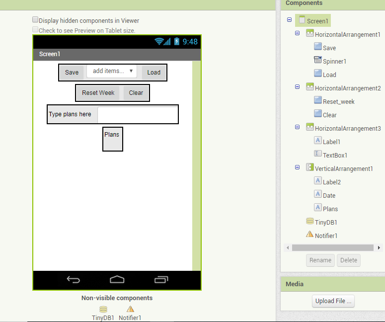
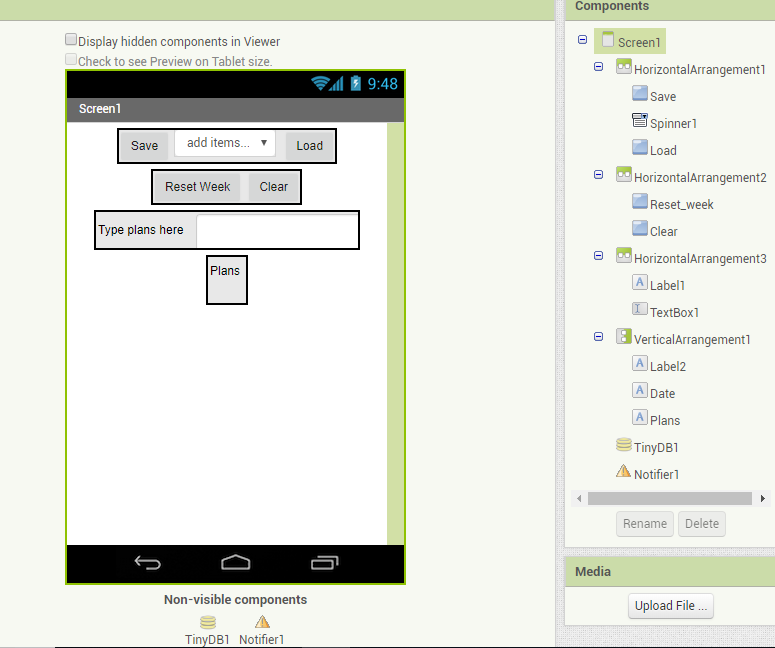

https://scratch.mit.edu/projects/241871926/#player
http://ai2.appinventor.mit.edu/?locale=en#4650430950932480
http://ai2.appinventor.mit.edu/?locale=en#6413820740370432
This is the pyton code you need
import time
#This is a comment
def exploration():
print("Made by Exploration Gang")
time.sleep(3)
print(' ______ _ _ _ ')
print(' | ____| | | | | (_) ')
print(' | |__ __ ___ __ | | ___ _ __ __ _| |_ _ ___ _ __ ')
print(' | __| \ \/ / /_ \| |/ _ \| /__/ _` | __| |/ _ \| /_ \ ')
print(' | |____ > <| |_) | | (_) | | | (_| | |_| | (_) | | | |')
print(' |______/_/\_\ .__/|_|\___/|_| \__,_|\__|_|\___/|_| |_|')
print(' | | ')
print(' |_| ')
time.sleep(2)
print(
'You wake up as your alarm screams next to your bed, its too early go back to sleep.'
)
time.sleep(1)
choice = raw_input('Go Back to Sleep?(Y/N)')
while choice == 'Y':
print('You go back to sleep, you wake up, moments later, only to realize')
print('it will be difficult to go back to sleep.')
time.sleep(1)
choice = raw_input('Will you finally wake up?(Y/N)')
if choice == 'N':
print('You try to go Back to Sleep. Only to realize you can not.')
time.sleep(1)
print('You have decided to wake up')
time.sleep(1)
else: #you wake up
print('Rise and Grind!')
time.sleep(1)
choice = raw_input(
'you turn off your alarm it is almost noon,and you have work in ten minutes. You get ready.Do you take the bus or your bike?(Bus/Bike)')
while choice != 'Bus' and choice != 'Bike':
choice = raw_input('Invalid Answer. Try again(Bus/Bike)')
if choice == 'Bus':
print('You decide to ride the bus, since it is chilly out.')
time.sleep(1)
print('You arrive to work on time.')
time.sleep(1)
print('It ends up being just an average day, you go home, only to realize nothing much has changed.')
return
else: #you chose Bike
choice = raw_input('You hop on to your bike and begin pedalling as fast as possible to reach your work on time. You see a clode friend on your way there. Should you talk to them, or continue.(Continue/Stop):')
while choice != 'Continue' and choice != 'Stop':
choice = raw_input('Invalid Answer.Try again. (Continue/Stop)')
if choice == 'Continue':
print('You continue to you\'re expected path, ocasionaly wondering what would happen if you talked to them.')
time.sleep(1)
print('You arrive to work just in time.')
time.sleep(1)
print('Another work day, not much has happened.')
time.sleep(1)
print('You realize there is not much for you at work, and if you were fired, it might have not been such a bad thing.')
time.sleep(1)
print('You go home tired, and wonder what could have happened if you decided to do something different today.')
return
else: #you chose Friend
print(
'You say Hello to your friend.')
time.sleep(1)
print('They Say Hi back, as you continue your path to work.')
time.sleep(3)
print('Uh Oh! It seems like you have gotten distracted, and took a wrong Turn!')
time.sleep(1)
print('You have to decide quickly, should you try to make it to work on time, or explore something new?')
choice = raw_input('What Should you do?(Work/Explore)')
while choice != 'Work' and choice != 'Explore':
choice = raw_input('Invalid Answer.Try again. (Work/Explore)')
if choice == 'Work':
print('You try to find your way back to work.')
time.sleep(1)
print('After an hour, you find your workplace. Your boss is already at your deck.')
time.sleep(1)
print('You were fired, but you soon realize, that you never really even enjoyed working there.')
return
else: #choice was Explore
print('You have decided to explore the city you have just moved to.')
time.sleep(1)
print('You stroll around the city all day, gaining new expieriences, and trying out new things.')
time.sleep(1)
print('You decide to head back, feeling satisfied by how your day went')
time.sleep(1)
print('As you walk your bike back to your apartment building, you look towards the sunset, and realize that life is great, when you look around')
time.sleep(1)
print('Unfortunately, you were so distracted by the sunset that you did not look both ways before crossing the street, and were ran over by the bus that should have taken you back home.')
time.sleep(1)
print('You died a horrible death')
print('THE END')
return
def h():
print ('Woah')
Home
Portfolio
About
This is my Portfolio Page!

 
